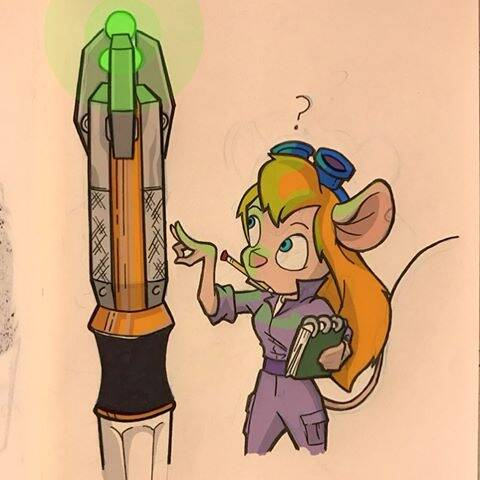

To properly display this page you need a browser with JavaScript support.
×
Меню
Индекс
Поиск
Поиск
Поиск
Сказ про Бамп 5.4
Оглавление
Предыдущая
To properly display this page you need a browser with JavaScript support.
Оглавление

Оглавление
Заметки о Заметках
Где что почем или о дополнительных файлах
Раздел 0. В качестве предисловия
Вступление
About versions of the Notes
Заметки версии 1.0
Заметки версии 1.2
Заметки версии 1.5
Заметки версии 2.0
Заметки версии 2.1
Заметки версии 2.2
Заметки версии 2.3
Заметки версии 2.4
Заметки версии 2.5
Заметки версии 2.6-2.9
Заметки версии 3.0
Заметки версии 3.1
Заметки версии 3.2
Заметки версии 3.3
Размышления на тему истории и напутственное слово
Перед началом свершений
Размышления над историей моддинга
For remember!
Living sites
Half Dead sites
Dead sites
Memorials on WA
Примечания о «терминах».
Glossary
Symphony_the
Благодарности и копирайты
Раздел 1. Теоретический.
Параграф 1.
Базовый пакет программ
Приступая к работе
3D MAX интерфейс
Tes Cs интерфейс
Photoshop интерфейс
GIMP интерфейс
Blender
Ссылки на плагины к программам
Nifskope
MAYA
3D MAX о версиях
MAX 3
MAX 4
MAX 5
MAX 6
MAX 2009
Gmax
3d MAX о возможностях плагинов
О плагинах в общем
TesExporter о версиях
FFE о версиях
About 4.2 ver
mimmerse.ini
Multiple Normals/UVs and Transform-Limitations (EN)
TesExporter
TesExporter экспорт
TSEXP Report Detail Level
TSEXP Самeras
TSEXP Lights
TSEXP Vertex Weights
TSEXP Unused UV
TSEXP Optimize
TSEXP Force 1 bit Alfa
TSEXP Morrowind Preprocess
TSEXP Exclude duplicates
TSEXP Animation
TSEXP экстра свойства
TSEXP AnimNode
TSEXP zbuffer
TSEXP flags for particles
TSEXP billboard
TSEXP sgoKeep
TSEXP compression
TesExporter TES SHADER
Shader basic Parameters
Tes Shader Material
Work of colors
Ambient and diffuse
Tes Shader Vertex color
Texture and Vertex Color Apply Modes (EN)
Vertex Colors & Apply Mode(EN)
Tes Shader Transparency modes
Alpha Blending or Transparency Modes
Transparency Modes (EN)
Tes Shader Alpha testing
Alpha Testing
Alpha Blending and Alpha Testing(EN)
Tes Shader Maps
Mystique and All Slots
Old Data on FlipController
Настройка текстуры (EN)
Making textures look good with The NetImmerse Shader (en)
Environment Maps (EN)
Base Map Rollout (EN)
Dark Map Rollout (EN)
Detail Map Rollout (EN)
Decal Map Rollout (EN)
Bump Map Rollout (EN)
Gloss Map Rollout (EN)
Glow Map Rollout (EN)
Particle Color and Opacity Map (EN)
TesExporter всякие примечания
FFExporter
Netimmerse экспорт
FFE original Help from 4.2 (en)
Scene Graph Optimization
FFE menu export Animation
APP_TIME and APP_INIT
FFE Textures as Separate NIFs
Around Export What's can be used
FFExporter экстра свойства
NetimmerseShader
Niftools
Niftools импорт
Niftools Import issue
NFT Import
NFT Animation Import
NFT Geometry
NFT Skeleton
NFT Miscellaneous Import
Import Presets
Import separate KF
3ds Max/Guides/Importer (EN)
Niftools экспорт
NFT Export
NFT Mesh
NFT Skin modifier
NFT Animation
NFT Miscellaneous
NFT Scene
3ds Max/Guides/Exporter (EN)
Niftools SHADER
3ds Max/Guides/Config (en)
Animation Questions (en)
Установка Nif плагинов в MAX
О текстурах
Поддерживаемые форматы текстур
Таблица размеров файлов текстур
Загрузка Видеопамяти TGAvsDDS
Общие примечания о текстурах
Bump NormallMap Displace
General Texturing Considerations (en)
How to make textures good (EN)
Параграф 2.
Nifskope a short word
About Nifskope using
Nifskope main interface
Nifskope первичная настройка
Nifskope issues
Nifskope menu and controll
Nifskope File
Nifskope View
Nifskope Render
Nifskope Spell
Nifskope Help
NifSkope/Working: Basic Use(EN)
Morrowind/NifSkope Alchemy(EN)
Nifskope Mouse Clicks
Nifskope RCM at NODES
Nifskope Transform
Nifskope Optimize
Nifskope File Offset
Nifskope Flags
Nifskope Block
Nifskope Node
Nifskope RCM at Shapes
Nifskope Mesh
Nifskope Texture
Nifskope UV editor
Nifskope RCM at Property&Data
Nifskope Skeleton
Nifskope Material
Nifskope Edit Bounds
Nifskope Edit Flip Controller
Nifskope Favorite Commands
Nifskope HotKeys
Nif.Xml
Nif.Xml working version
LiveMeshEdit script
Параграф 3.
NIF файл
Nif файл общее представление
nif\Xnif\Kf
Nif
Nif подробнее
Xnif
Xnif подробнее
Kf
Kf подробнее
niNode in generally
Именные Nodы
Системные имена
Системный префикс TRI
ArrowBone
ArrowBone создание в файле
AttachLight
AttachLight создание в файле
Camera
BoneOffset
BoneOffset создание в файле
Bounding Box
Around Bounding Box part 1
Around Bounding Box part 2
Bounding Box illustrations just
CHEST&ETC
CHEST&ETC Важные примечания
CHEST&ETC Around Body Parts
DUMMY01
Around DUMMY01
tri EditorMarker
tri EditorMarker примечания
Tri Shadow
Around Shadow
Shadow in game how it's working
Shield Bone
Around Shield Bone
Weapon Bone
Around Weapon Bone
BIP01
BIP01 HEAD
ROOT BONE
MRT
Mob Bound
Grouping (EN)
niTriShapes
How Many Triangles and Clipping & Culling (EN)
Controllers of Animation
Общие свойства контроллеров
ACD Next Controller
ACD Flags
ACD Frequency
ACD Phase
ACD Start Time
ACD Stop Time
ACD Target
ACD Data
Controller chains
Типы ключей контроллеров
Паразитный NiKeyframe Controller
Dynamic Effects
Light Subclasses (EN)
Introduction to Dynamic Effects (EN)
Lighting in MaxImmerse (EN)
Texture-based Dynamic Effects (EN)
Projected Light Maps in MaxImmerse (EN)
Lighting Efficiency Considerations (EN)
Collision detection
Collision detection about RootCollsionNode
Collision detection methods of detection
Oriented Bounding Boxes
Triangles
Collision detection about PROXY object
Collision detection methods for PROXY object
Alternate Bounding Volumes (EN)
Collision detection a common method
Triangle/TriShape Ratios and Clipping/Culling Behavior
Collision detection some words around
Collision detection and creation MAXimmerse article (EN)
How Intersection Points are Calculated (EN)
Collision detection RCNode flags&test
Collision detection nif.xml edits
Flags
niStringExtra
niProperties
Мусорные свойства
Supported by Engine
AvoidNode
Примечания по AvoidNode
Код AvoidNode для Nif.xml
NiAccumulator
NiClusterAccumulator
NiAlphaAccumulator
NiAccumulator примечания
Код NiAccumulator для Nif.xml
NiAlphaController
NiAlphaController настройки
Примечания по NiAlphaController
NiAlphaProperty
NiAlphaProperty параметры
NiAlphaProperty примечания
NiAlphaProperty примеры использования
NiAlphaProperty Favorites Flag
NiAlphaProperty from NDL help (EN)
NiBillboardNode
NiBillboardNode параметры
NiBillboardNode примечания
NiBillboardNode NDL help (EN)
NiBillboardNode screenshots
NiBltSource
NiBltSource примечания
Код NiBltSource для Nif.xml
NiBone
NiBone примечание и пр.
NiBSAnimationManager
NiBSAnimationManager примечания
NiBSAnimationNode
NiBSAnimationNode примечания
NiBSAnimationNode флаги и настройки
NiBSPNode
NiBSPNode примечания
Код NiBSPNode для Nif.xml
NiCamera
NiCamera примечания
NiCamera настройки
Код NiCamera для Nif.xml
NiCollisionSwitch
NiCollisionSwitch примечания
Код NiCollisionSwitch для Nif.xml
NiDitherProperty
NiDitherProperty примечания
NiFlipController
NiFlipController настройки
NiFlipController примечания
NiFloatData
NiFloatData настройки
NiFltAnimationNode
NiFltAnimationNode настройки
NiFltAnimationNode примечания
Код NiFltAnimationNode для Nif.xml
NiFogProperty
NiFogProperty примечания
NiFogProperty скриншоты
NiGeomMorpherController
NiGeomMorpherController примечания
NiMorphData
NiKeyframeController
NiKeyframeData
NiKeyframeData настройки
NiKeyframeData примечания
Код NiKeyframeData для Nif.xml
NiKeyframeController примечания
NiKeyframeManager
NiKeyframeManager настройки
NiKeyframeManager примечания
Код NiKeyframeManager для Nif.xml
niLight
NiLight параметры
NiLight примечания
NiAmbientLight
NiAmbientLight примечания
NiDirectionalLight
NiDirectionalLight примечания
NiSpotLight
NiSpotLight примечания
NiPointLight
NiPointLight примечания
NiLightColorController
NiLightColorController примечания
Examples of Lights Working
Lights In Game
Lights In CS
NiLines
NiLinesData
NiLinesData настройки
Код NiLinesData для Nif.xml
NiLines примечания
NiLODNode
NiLODNode настройки
NiLODNode примечания
NiLookAtController
NiLookAtController настройки
NiLookAtController примечания и тесты.
NiLookAtController old data
NiMaterialProperty
NiMaterialColorController
NiMaterialProperty настройки
NiMaterialProperty примечания
NiNode
Velocity
NiNode настройки и примечания
NiParticle
NiAutoNormalParticles
NiAutoNormalParticlesData
NiRotatingParticles
NiRotatingParticlesData
NiParticleRotation
NiBSPArrayController
NiBSPArrayController примечания
NiBSPArrayController скриншоты
NiBSParticleNode
NiBSParticleNode примечания
NiBSParticleNode и обычные шейпы
NiParticleColorModifier
NiColorData
NiParticleGrowFade
NiParticleGrowFade примечания и настройки
NiParticleSystemController
NiParticleSystemController in short
NiParticleSystemController параметры
NiParticleSystemController примечания
NiParticleSystemController help (EN)
NiParticleBomb
NiParticleBomb настройки
NiParticleBomb примечания
Коды NiParticleBomb для Nif.xml
NiGravity
NiGravity настройки
NiGravity примечания
Коды NiGravity для Nif.xml
NiPlanarCollider
NiPlanarCollider настройки
NiPlanarCollider примечания
Коды NiPlanarCollider для Nif.xml
NiSphericalCollider
NiSphericalCollider настройки
NiSphericalCollider примечания
Коды NiSphericalCollider для Nif.xml
NiParticles
NiParticlesData
Emitter
Emitter примечания
NiParticleMeshes
NiParticleMeshesData
NiParticleMeshModifier
NiParticleMeshes примечания
Particle in short
NiParticles примечания part 1
NiParticles примечания part 2
Коды NiParticles для Nif.xml
NiPathController
NiPathController настройки
NiPathController примечания
Коды NiPathController для Nif.xml
NiPosData
NiRenderer
NiDX8Renderer
NiRenderedCubeMap
NiRenderedTexture
NiRenderedTexture примечания
NiRenderedTexture в картинках о глюках
Код NiRenderedTexture для Nif.xml
NiRenderedTexture рабочие результаты
NiRendererSpecificProperty
NiRendererSpecificProperty примечания
Код NiRenderedTexture для Nif.xml
NiRollController
NiRollController настройки
NiRollController примечания
NiScreenPolygon
NiScreenPolygon примечания
Код NiScreenPolygon для Nif.xml
NiSequenceStreamHelper
NiShadeProperty
NiSkinInstance
NiSkinInstance настройки
NiSkinData
NiSkinPartition
NiSkinPartition примечания
Код NiSkinPartition для Nif.xml
NiSkinInstance help (en)
NiSkinInstance примечания
NiSkinInstance and reflection maps
NiSortAdjustNode
NiSortAdjustNode примечания
About Sorting about sorting (EN)
Код NiSortAdjustNode для Nif.xml
NiSpecularProperty
NiSpecularProperty примечания
NiStencilProperty
NiStencilProperty настройки
NiStencilProperty описание теории
NiStencilProperty lesson zero
NiStencilProperty примечания
NiStencilProperty скриншоты
NiStringExtraData
NiStringExtraData примечания
NiStringExtraData список команд
NiSwitchNode
NiSwitchNode примечания
Код NiSwitchNode для Nif.xml
NiTextKeyExtraData
NiTextKeyExtraData примечания
Код NiTextKeyExtraData для Nif.xml
NiTextureEffect
NiTextureEffect настройки
Texture Filtering
Texture Pixel Filtering (EN)
Texture Clamping
Texture Type
Coordinate Generation Type
CG_WORLD_PARALLEL
CG_WORLD_PERSPECTIVE
CG_SPHERE_MAP
CG_SPECULAR_CUBE_MAP
CG_DIFFUSE_CUBE_MAP
In game screen shots in general
Clipped Projected Textures
Clipped Projected Texture Usage (EN)
Слоты текстурных эффектов
EFFECT_ENVIRONMENT_MAP
Environment Maps in MaxImmerse
EFFECT_ENVIRONMENT_MAP some example screens
EFFECT_PROJECTED_LIGHT
Projected Light Maps_EN
EFFECT_PROJECTED_LIGHT some example screens
EFFECT_PROJECTED_SHADOW
Projected Shadow Maps_EN
EFFECT_PROJECTED_SHADOW some example screens
EFFECT_FOG_MAP
EFFECT_FOG_MAP some example screens
Model Projection Matrix short NOTE
NiTextureEffect примеры смешивания эффектов
Настройки набор 1
Настройки набор 2
Настройки набор 3
Все эффекты разом
Практичекие результаты
NiTextureEffect примечания
Код NiTextureEffect для Nif.xml
NiTextureEffect пара слов о самих текстурах
NiTexturingProperty
NiTexturingProperty описание параметров
NiSourceCubeMap
NiSourceTexture
NiSourceTexture примечания и настройки
NiPixelData
NiPalette
NiPalette примечания
NiPixelData примечания
NiPixelData настройки
Multi-Textures
Base
Dark
Dark примечания
Detail
DetailONoFF
Detail-map(En)
Detail примечания
Gloss
Gloss примечания
Glow
Glow примечания
Bump
Bump настройки для эффектов
Bump примечания
Bump Map (EN)
Decal
Decal примечания
Texturing Details(EN)
NiTexturingProperty примечания
NiTriShape
NiTriShape настройки
NiTriShapeData
NiTriShapeData настройки
NiTriShapeDynamicData
Код NiTriShapeDynamicData для Nif.xml
NiTriShape примечания
NiTriStrips
NiTriStripsData
NiTriStripsData настройки
NiTriStrips примечания
NiTriStrips old data
NiTriStrips скриншоты
NiUVController
NiUVData
NiUV and glitches
NiUVController UV0 Fix
NiUVController примечания
NiVertexColorProperty
NiVertexColorProperty примечания
NiVertWeightsExtraData
NiVertWeightsExtraData примечания
NiVisController
NiVisData
NiVisController примечания
NiWireframeProperty
NiZBufferProperty
NiZBufferProperty настройки
NiZBufferProperty примечания
RootCollisionNode
RootCollisionNode примечания
BrickNiExtraData
BSMirroredNode
BSMirroredNode примечания
TES3ObjectExtraData
Раздел 2. Практический
Краткий экскурс. Вопрос - Ответ
Об оптимизациях NIF файлов
Texture atlas and FPS screens
Причины КТД в моделях
3ds MAX
Общее
Импорт
Экспорт
Анимации
List of Animation Groups of MW
Анимации общие примечания
Morrowind Animation Groups (EN)
Анимационные группы Морровинда (RU)
Анимационные группы. Таблица кодов
MW note keys All at once
Анимации IDLEs
Анимации HITs
Анимации RUN_WALK
Анимации WEAPONS
Анимации Weapons group preset for creatures
Анимация ключами (keyframe)
Keyframe Общие примечания
KeyFrame DopeSheet around
KeyFrame creature animation around
KeyFrame about the keys
make Additional anim to NPC
make Walk Animation
Add Note Track
Add keys
Синхронизация локальных анимаций с Базовой
Синхронизация оружия с Базовой Анимацией
Morpher
Work with Morphing
Bow&Crossbow
bow_creation
SimCloth
ExplosivSet
Heads&eyes
Head tutorial (2003)
Heads animation after FaceGen
Heads polishing with Nifskope
Heads with shinny eyes
Heads with billboard shinny eyes
Heads with billboard eyes via texture effect
Heads with billboard eyes via stencils using
Heads with billboard eyes via decal map and texture effect
Heads&eyes in game
Жидкий терминатор
REACTOR
REACTOR Примечания по работе
REACTOR Примечание по настройкам
REACTOR Примечание по связям
REACTOR Примечания об оптимизациях
REACTOR Кулинарные заметки
REACTOR Скелет
REACTOR Ткани
REACTOR Оружие
REACTOR Элементы брони
REACTOR Существо
REACTOR Плащ для Игрока
REACTOR Fast Update of exist an animation
Flex
Анимация гибкой оболочки
Attach KF
САТ
FBX
Supported animation controllers
Loop Constant PingPong
Создание простейшей анимации для активатора
Bake Animations
Vertex Paint
Vertex Paint at whole
Vertex color with Lights
Vertex alpha
VertexTexture
Work with textures
Запекание текстуры
СкринРендер
MultyUVset
DarkMap create ghosts
Разное
Dual layered meshes
About interior meshes set and fake mirrors
MeshSmooth
Detriangulation
Helpers
Mesher
Stripsing geometry
Cloning and Instancing with 3ds Max
About Bone objects
3dMAX version 3.0 - 5.1
Текстуры и Материалы
Анимация текстур потоком
Анимация смещения развертки (UV)
Анимация цвета материала
Анимация прозрачности материала
Создание простейшего эффекта Блеска
Создание Displacement
Создание упакованной текстуры
Lights in Max
Light in whole
Max5 how to create Darkmaps (EN)
Light as texture
Texture projection and animation
Settings for texture effects
Light as vertex color
Настройки для режима вертексного освещения
Color changing for Light
Particles Создание
Particles in general
Spray
Super Spray
Parray
Snow
Bizzard
Pcloud
Particles Forces
Particles Deflectors
Particles Gravity
Particles PBomb
Particles Color changing
Particles Ray Trasing and Reflection effects
Particles Анимация для искр от сварочного аппарата
Сложные контроллеры анимаций
Создание LookAt
Создание Roll
Создание Path
IK chain
IK anim and 4.2 nif files
Wire Parameters
Анимация пластинчатого элемента
Создание Avoid
Создание billboard
billboard classic tutorial
billboard простейший ореол
billboard глаза NPC следящие за игроком
billboard eye of Сарумян
billboard спрайтовый туман
Создание Bounding Box
Создание Collision
Collision простой объект
Collision для анимированных объектов
Collision с частичной анимацией
Collision всякие примечания
Создание NoCollision
Создание EditorMarker
Создание Invisible
Создание LOD
Создание Shadow
Создание z-буфера
Использование Blob и FLTnode
Создание текстурных эффектов
Создание свойств тумана
Создание NiVertWeightsExtraData
2009
Skin
Skin in general
Skining
Skin Wrap
S\W существ
О щелях в оболочке
Physique&Character Studio
Skinning & Morphing (EN)
Short word around making the Armor set
Nifskope working
How to add regular objects via Nifskope only
AvoidNode how to add via NF
NiAlphaController how to add via NF
NiAlphaProperty how to add via NF
NiBillboardNode how to add via NF
NiBltSource how to add via NF
NiBSAnimationNode how to add via NF
NiBSParticleNode how to add via NF
NiBSPNode how to add via NF
NiCollisionSwitch how to add via NF
NiDitherProperty how to add via NF
NiFlipController how to add via NF
NiFltAnimationNode how to add via NF
NiFogProperty how to add via NF
NiGeomMorpherController how to add via NF
NiKeyframeController how to add via NF
niLight how to add via NF
NiAmbientLight how to add via NF
NiDirectionalLight how to add via NF
NiSpotLight how to add via NF
NiPointLight how to add via NF
NiLightColorController how to add via NF
NiLines how to add via NF
NiLODNode how to add via NF
NiLookAtController how to add via NF
NiMaterialProperty how to add via NF
NiMaterialColorController how to add via NF
NiParticle Systems how to add via NF
NiBSPArrayController how to add via NF
NiParticleColorModifier how to add via NF
NiParticleGrowFade how to add via NF
NiParticleSystemController how to add via NF
NiParticleBomb how to add via NF
NiGravity how to add via NF
NiColliders how to add via NF
Particles from scratch via Nifskope only
NiParticle how to add via NF
NiPathController how to add via NF
NiRollController how to add via NF
NiSortAdjustNode how to add via NF
NiSpecularProperty how to add via NF
NiStencilProperty how to add via NF
NiStringExtraData how to add via NF
NiSwitchNode how to add via NF
NiTextKeyExtraData how to add via NF
NiTextureEffect how to add via NF
NiTexturingProperty how to add via NF
BumpMap how to add via NF
NiPixelData(niPalette) how to add via NF
NiTriShape how to add via NF
NiTriStrips how to add via NF
NiVertexColorProperty how to add via NF
NiUVController how to add via NF
NiVertWeightsExtraData how to add via NF
NiVisController how to add via NF
NiWireframeProperty how to add via NF
NiZBufferProperty how to add via NF
RootCollisionNode how to add via NF
Additional hints
Import obj или быстрая конвертация
Быстрый ретекстур модели
Добавление Bounding Box
Добавление EditorMarker
Добавление Shield&Weapon Bones
Добавление контроллеров
Добавление ускорения (Velocity)
Добавления эффекта освещения (niLigth)
Доработка LOD
LOD в картинках
Доработка RootCollisionNode
RootCollisionNode простое добавление
RootCollisionNode активаторы v1
RootCollisionNode активаторы v2
RootCollisionNode активаторы v3
RootCollisionNode активаторы v4
Доработка Shadow
Доработка Stencil или порталы 2.0
Доработка Stencil ореол и его трафареты
Доработка Stencil Первый Привет Неревару
Доработка Stencil Второй Привет Неревару
Доработка Stencil Третий Привет Неревару
Доработка Stencil Портальный Привет Неревару
Доработка Stencil Колодезный привет Неревару
Доработка Stencil Рагнаблейд Неревару Праздничный
Доработка Stencil Рагнаблейдный Привет Неревару
Доработка Stencil примечания
Доработка Xnif файла
Доработка текстурных эффектов
Текстурный эффект в картинках
Текстурный эффект добавление v1
Текстурный эффект добавление v2
Текстурный эффект добавление v3
Текстурный эффект добавление на частицы
Текстурный эффект скриншоты в массиве частиц
Текстурный эффект световое шоу на частицах
Текстурный эффект Око Сарумяна или как следить за игроком
Текстурный эффект Одуванчик или как создать звезду
Скриншоты эффекта звезды
Текстурный эффект Создание правильного призрака
Текстурный эффект Создание фейковых зеркал
Текстурный эффект Создания эффекта муара
Текстурный эффект Создание микса цветов
Микс цветов ENVIRONMENT вкратце
Текстурный эффект получение эффекта тумана
Текстурный эффект эффекта тумана скриншоты
Текстурный эффект эффекта тумана примечания
Текстурный эффект получение эффекта стекла v1
Текстурный эффект получение эффекта стекла v2
Текстурный эффект получение эффекта стекла v3
Текстурный эффект получение эффекта густого тумана
Доработка спрайтов через Посмотри На
Замена модели оружия в полете и не только
Замена модели оружия на земле
Копипаста Контроллеров
Копипаста Объектов
Одевание скелета
Замена ShapeData только
Редактирование textExtra KF файла
Создание водоплавающих и подземных существ
Создание активаторов с точкой контроля
Создания альфа-трип
Фонарик Нереваринский
Прожектор Неревара в действии
Создание дыр в ландшафте
Создание порталов через альфа свойства
Создание потока шейпов вместо потока текстур
Создание спрайтовых глаз
Создание статичных частиц
Создания следа от оружия при ударе
Создание частиц с нуля
Создание эффекта глубокого рельефа
Создание эффекта глубокого объема
Создание Multiple UV set
Создание Nif Xnif KF файла
Упаковка текстуры
Nifskope XML checker
Nifskope очистка НИФ файла
Nifskope сообщения об ошибках
2d Editiors
Форматы текстур
DDS
DDS Save Options
DDS_DXT5_NM
DDS_4.4.4.4 RGB
DDS_Alpha Channel in DDS
DDS_Artefacts of Compression
DDS_Mip-levels
DDS_Hint about using MIPs in DDS
DDS_CUBEMAP
DDS_How create CUBEMAP
DDS_Using Source Cube Maps (EN)
DDS_Gimp DDS how to
TGA
ТГА доработка
Detail-map
Dark-map
Create Mask for textures
Gloss
Glow-map
Bump-maping
More about Bump Making
Decal-map
Alpha Channel creation v1
Alpha Channel creation v2
PBR Shaders
icons
TES CS
TES CS Optimization for Quick test
TES CS Optimization for Start game
TES CS первые шаги
TES CS Часть 0: Картинки и в общем
TES CS Часть 1: Базовый экскурс
TES CS Часть 2: Работа с интерьерами
TES CS Часть 3: Работа с экстерьерами
TES CS Диалоги
TES CS Диалоги вокруг и около
TES CS Краткий курс написания диалогов для от zOmb'a
TES CS Dialogue Tutorial by Srikandi
TES CS Introduction
TES CS Greetings and Basic Conditions
TES CS Function/Variable Conditions
TES CS Topics
TES CS Result
TES CS Choice
TES CS Appendix: Function/Variable List
TES CS Jac's Awesome Dialog Tutorial
TES CS Topic tab
TES CS ADDING DIALOG
TES CS THE CHOICE FUNCTION
TES CS SIMPLE QUEST TUTORIAL
TES CS TIPS ON ADDING AND CREATING DIALOG
TES CS Comprehensive Dialogue for Morrowind - The "How-To
TES CS MSFD 8.2 rus (9.0 eng)
MSFD Предисловие к восьмому изданию
MSFD Foreword to the ninth edition
MSFD Вступление
MSFD Пояснение к формату записей в МСФД
MSFD Что такое скрипт
MSFD Что могут скрипты
MSFD Чего не могут скрипты
MSFD Ограничения редактора скриптов
MSFD Limits of the Script Editor
MSFD О References Persist
MSFD On References Persist
MSFD Нацеленные скрипты: запуск «глобальных» скриптов, привязанных к объекту
MSFD Targeted scripts: running "global" scripts tied to an object
MSFD The "72-Hours Bug"
MSFD Pitfalls
MSFD Курс молодого скриптера, или щенок и его ванночка
MSFD Поехали!
MSFD My first Scripting tutorial
MSFD Основной раздел
MSFD Общая информация
MSFD Скрипты, команды и синтаксис в кратце
MSFD General Information: Scripts, Commands and Syntax
MSFD Синтаксис
MSFD Syntax
MSFD Переменные
MSFD Variables
MSFD Операторы / математические расчеты
MSFD Operators / mathematical calculations
MSFD Проверка условий
MSFD Testing conditions
MSFD Условия While
MSFD While conditions
MSFD Создание булевых операторов
MSFD Constructing Boolean operations
MSFD Квадратный корень
MSFD Square root
MSFD Прерывание выполнения скрипта
MSFD Breaking of script processing
MSFD Сохранение процессорного времени
MSFD Saving CPU time
MSFD Безопасный старт глобальных скриптов — избегая скрипт main
MSFD Safely starting global scripts- avoiding the main script
MSFD Управление глобальными скриптами
MSFD Controlling global scripts
MSFD Показ сообщений
MSFD Displaying messages
MSFD Показ переменных и предопределенного текста
MSFD Displaying variables and text defines in a message box
MSFD Список функций TES
MSFD Новые функции Трибунала
MSFD New functions that come with TRIBUNAL
MSFD Новые функции Бладмуна
MSFD New functions that come with BLOODMOON
MSFD Ранее недокументированные функции
MSFD Previously undocumented functions
MSFD Функции в виде переменных
MSFD Variable-type functions
MSFD Работа с объектами
MSFD Движение и создание объектов
MSFD Движение вдоль оси объекта
MSFD Moving along an objects axis
MSFD Движение вдоль оси мира
MSFD Moving along the world axis
MSFD Установка позиции
MSFD Setting position (the other way to do movement)
MSFD Позиционирование объектов в мире или во внутренних ячейках
MSFD Positioning an object in the world or in an interior cell
MSFD Перемещение объекта в его оригинальную позицию
MSFD Resetting an object to its original position
MSFD Помещение предмета рядом с игроком
MSFD Placing an item near the PC
MSFD Помещение предметов рядом с объектом
MSFD Place items near an object
MSFD Создание копий объектов с помощью PlaceItem
MSFD Creating new object-references with PlaceItem
MSFD Вращение и углы
MSFD Вращение объектов
MSFD Making an object spin
MSFD Установка углов
MSFD Setting Angles
MSFD Скрипт по тригонометрии – быстрый синус и косинус
MSFD Trigonometry script - fast sine and cosine
MSFD Функции размеров
MSFD Scale Functions
MSFD Определения локации, относительного положения и движения
MSFD Определение нахождения игрока в интерьере или в экстерьере
MSFD Detecting if player is indoors or outdoors
MSFD Определения ячейки игрока
MSFD Determining the players cell
MSFD Расстояние от одного объекта до другого
MSFD Distance of one object to another
MSFD Определяем позицию и поворот объекта
MSFD Determining an objects position and facing
MSFD Определяем, когда игрок покинул ячейку
MSFD Determining when the PC leaves a cell
MSFD Определяем, путешествует ли игрок
MSFD Detect player traveling
MSFD Доступные и недоступные объекты
MSFD Enabling and disabling objects
MSFD Полное удаление копии
MSFD Deleting a reference completely
MSFD Не сохранять изменений объекта
MSFD Don’t save changes to an object
MSFD Запирание и отпирание дверей или сундуков
MSFD Locking and Unlocking doors or chests
MSFD Проверка активации объектов и предметов
MSFD Checking activation of an item and activating it
MSFD Анимирование объектов
MSFD Animating objects
MSFD Работа с вещами в инвентаре
MSFD Adding and removing items from the inventory
MSFD Сброс предмета на пол
MSFD Dropping items to the floor
MSFD Сброс предмета на пол Игроком
MSFD dropping items by Player
MSFD Добавление предмета в инвентарь Игрока
MSFD Monitoring inventory activities: Adding
MSFD Работа с камнями душ
MSFD Checking and managing souls and soulgems
MSFD Использование камней душ
MSFD using soul gems
MSFD Надевание предметов
MSFD Force-equipping an Item
MSFD Отслеживание, был ли надет предмет
MSFD Detecting if an item has been equipped
MSFD Запрет возможности надеть предмет
MSFD Disabling ability to equip an item
MSFD Проверка наличия предметов в инвентаре
MSFD Checking for presence of items in inventory
MSFD Починка предметов
MSFD Repairing objects
MSFD Информация о надетых объектах
MSFD Worn / equipped object information
MSFD Функция UsedOnMe
MSFD UsedOnMe function
MSFD Магические и механические ловушки
MSFD Arrow- or magical traps
MSFD Скриптовая телепортация
MSFD Scripted teleporting
MSFD Обнаружение столкновений статичных объектов
MSFD Collision detection
MSFD CellUpdate
Рандомные анимации объектов
MSFD NPC(cущества): ИИ, движение, прочее
MSFD NPC идет в новую локацию
MSFD Make an NPC walk to a new location
MSFD Проверка, завершил ли NPC свое движение
MSFD Checking whether an NPC has performed his movement
MSFD Поворачиваем актера в нужном направлении
MSFD Make an Actor turn or face a certain direction
MSFD Задание случайного перемещения Актера
MSFD Define random Actor movement
MSFD Следование и эскорт
MSFD Following and Escorting
MSFD Актеры активируют объекты
MSFD Making Actors activate objects
MSFD Определение текущего пакета ИИ
MSFD Checking which AI package is currently executed
MSFD Заставляем актера красться
MSFD Forcing sneak movement
MSFD Заставляем актера бегать и прыгать
MSFD Forcing running and jumping
MSFD Определение готовности к бою
MSFD Detect combat readiness
MSFD Раса, Фракция и Ранг
MSFD Определение расы
MSFD Determining Race
MSFD Определение статуса игрока во фракции
MSFD Determining the PC's Faction status
MSFD Изменение реакции и положения во фракции
MSFD Modifying faction standing and reaction
MSFD Определение и изменение реакции
MSFD Determining and changing reputation and disposition
MSFD Доля в экипировке и функция профита компаньонов
MSFD Equipment sharing and other companion functions
MSFD Оставайся снаружи
MSFD StayOutside
MSFD Функции для оборотней
MSFD Установка атрибутов оборотня
MSFD werewolf attributes
MSFD Изменение цвета Секунды
MSFD Change the color of Secunda
MSFD Определение, скольких убил оборотень
MSFD Determine how many kills a werewolf has
MSFD Проверка, находится ли существо в форме оборотня
MSFD Check to see if the creature is in werewolf form
MSFD Превращение в оборотня
MSFD Change to a werewolf
MSFD Специальные глобальные переменные для оборотней
MSFD Special werewolf global variables
MSFD Заставляем кого-то падать
MSFD Падение игрока с объектов
MSFD Falling off from objects
MSFD Making someone fall
MSFD Триггеры для актеров, стоящих на объектах
MSFD Triggers for Actors standing on an object
MSFD Повреждение актера, стоящего на объекте
MSFD Hurting an Actor standing on an object
MSFD Триггеры для актеров, касающихся объектов
MSFD Object Collision Functions
MSFD Определяем, замечен ли один актер другим
MSFD Determine whether an Actor is detected by another Actor
MSFD Линия видимости
MSFD Она на меня смотрит?
MSFD Is she looking at me?
MSFD Line of Sight
MSFD Изменяем и проверяем Навыки, Атрибуты и другие характеристики
MSFD Определение и изменение характеристик игрока и актеров:
MSFD Determining and changing Actor and player stats
MSFD Определение и изменение Здоровья, Магии и Усталости:
MSFD Determining and changing Health, Magicka, Fatigue
MSFD Определяем и изменяем скиллы
MSFD Determining and changing Skills
MSFD Определение и изменение уровня
MSFD Determining and changing Level
MSFD Скрипт тестилка параметров игрока.
MSFD GetStat, ModStat and SetStat: A concerned modder’s guide
MSFD Бой
MSFD Обнаружение атак
MSFD Detecting Attack
MSFD Функции ИИ для Боя
MSFD Combat related Get/Mod/Set AI functions: Fight, Flee, Alarm
MSFD Отслеживание убийств и нокаутов
MSFD Keeping track of kills and knockouts
MSFD Воскрешение мертвого Актера
MSFD Resurrecting a dead Actor
MSFD Заставляем Актеров переключать оружие
MSFD Making Actors switch between weapons
MSFD Большие сражения
MSFD Large battles
MSFD Making NPCs switch between spell "sets"
MSFD Преступления
MSFD Определение и изменение уровня преступлений
MSFD Determining and changing Crime Level
MSFD Заключение игрока в тюрьму
MSFD Jailing the PC
MSFD Очистка игрока от преступлений
MSFD Clearing the PC of crime
MSFD Уровень преступления игрока
MSFD Detecting crime
MSFD Полезные глобальные переменные
MSFD Useful global variables
MSFD Магия
MSFD Ограничение на телепортацию
MSFD Limiting the use of teleport
MSFD Ограничение левитации
MSFD Limiting the use of levitation
MSFD Добавление и удаление заклинаний и проклятий
MSFD Adding and removing spells and cursing
MSFD Кастование заклинаний
MSFD Casting spells
MSFD Управление и тестирование заклинаний
MSFD Managing and testing for spells
MSFD Управление и тестирование эффектов заклинаний
MSFD Managing and testing spell effects
MSFD Тестирование болезней
MSFD Testing disease
MSFD Взрыв
MSFD Explosion
MSFD Функции Get/Mod/Set для магии
MSFD Magic Get/Mod/Set effects functions:
MSFD Добавление скрытых заклинаний
MSFD Манекены
MSFD Mannequins
MSFD Making Actors lie down
MSFD Derived attribute calculations
MSFD Игрок. Управление, проверка действий
MSFD Проверка действий игрока: бежит, прыгает, крадется?
MSFD Detecting players action: running, jumping, sneaking?
MSFD Средства управления игрока
MSFD Игрок спит
MSFD Player sleeping
MSFD Включение и выключение средств управления и интерфейса
MSFD Отключение средств управления
MSFD Disable player control functions
MSFD Включение средств управления
MSFD Enable player control functions
MSFD Проверка статуса средств управления
MSFD Check player control status
MSFD Переключение в вид от первого и от третьего лица
MSFD Force first or third person view
MSFD Функции для меню генерации персонажа
MSFD Functions for character generation menus
MSFD Определение открыл ли игрок меню
MSFD Determining if player has menus open
MSFD Использование MenuTest, чтобы открыть и закрыть меню
MSFD Using MenuTest to open and close menus
MSFD Проверяем, когда игрок загружает игру
MSFD Detecting when the player does a load from saved game
MSFD Использование переменной CharGenState
MSFD Uses of the CharGenState variable - Disabling saving and menus
MSFD Обнаружение использования свитков или книг
MSFD Detecting use of scrolls or books
MSFD Кинематическая последовательность
MSFD Cinematic sequence
MSFD Тексты и Диалоги. Сообщения.
MSFD Функции для диалогов
MSFD Добавление темы для диалога
MSFD Adding a dialogue topic
MSFD Начало и окончание диалога
MSFD Initiating and ending dialogue
MSFD Инициация диалога с оборотнем
MSFD Allowing forced Dialogue with Werewolf player
MSFD Множественный выбор – как задавать вопросы
MSFD Multiple choice – asking questions
MSFD Добавление записей в журнал и тест записей журнала
MSFD Adding to the journal and testing journal entries
MSFD Специальные диалоговые функции
MSFD Special dialogue-only functions
MSFD Изменение значения Hello
MSFD Changing the Hello setting
MSFD Полезные диалоговые переменные
MSFD Useful dialogue variables
MSFD Brief dialogue how-to
MSFD Creating clean dialogue
MSFD A few golden rules
MSFD Звук
MSFD Пусть актеры говорят
MSFD Make Actors speak an audio file
MSFD Проигрывание музыки
MSFD Playing music
MSFD Проигрывание звуков
MSFD Playing sounds
MSFD Управление звуком
MSFD Controlling sound
MSFD Форматы звуковых файлов
MSFD Sound file formats
MSFD Использование звука для обнаружения событий
MSFD Use sound to detect events
MSFD Следим за временем
MSFD Таймер
MSFD Timer
MSFD Глобальные переменные, зависящие от времени
MSFD Morrowind's time related global variables
MSFD Течение дней
MSFD Keeping track of days passed
MSFD Фазы лун
MSFD Moon phases
MSFD Погода
MSFD Изменение погоды
MSFD Changing weather
MSFD Изменение установок погоды для региона
MSFD Changing weather settings for a region
MSFD Определение текущей погоды
MSFD Determining current weather
MSFD Определение скорости ветра
MSFD Detecting wind speed
MSFD Локации, видео, яркость, уровневые списки и пр.
MSFD Уменьшение и увеличение яркости
MSFD Fading the screen in and out
MSFD Добавление локации на карту
MSFD Adding a location to the map
MSFD Присваивание случайных значений переменным
MSFD Assigning random values to variables
MSFD Проигрывание видео
MSFD Playing videos
MSFD Функции Уровневых Списков
MSFD Levelled List functions
MSFD Функции уровня воды
MSFD Water Level Functions
MSFD Приложение
MSFD Список магических эффектов
MSFD Советы разные
MSFD Поиск, копирование и вставка текста
MSFD Little helpers: Text search, copy, paste
MSFD Альтернативные скриптовые редакторы
MSFD Alternative scripting editors
MSFD Используйте стиль для написания нормальных скриптов
MSFD Script with style for safer scripting
MSFD Чистка вашего мода
MSFD Cleaning up your mod
MSFD Руководство по созданию объектов для езды
MSFD A guide to making ridable objects
MSFD Решение проблем
MSFD Консоль
MSFD The Console
MSFD Сообщения об ошибках, неправильная работа и обычные причины
MSFD Error messages, malfunctions and common causes
MSFD AITravel не работает
MSFD Удвоение NPC
MSFD Вылет при исполнении скрипта
MSFD Вылет при загрузке плагина
MSFD Взаимодействие между модами
MSFD Interaction between mods
MSFD Script Extenders
TES CS GMST
TES CS GMST Вступление
fRepairMult
fRepairAmountMult
fSpellValueMult
fSpellMakingValueMult
fEnchantmentValueMult
fTravelMult
fTravelTimeMult
fMagesGuildTravel
fRestMagicMult
fWortChanceValue
fMinWalkSpeed
fMaxWalkSpeed
fMinWalkSpeedCreature
fMaxWalkSpeedCreature
fEncumberedMoveEffect
fBaseRunMultiplier
fAthleticsRunBonus
fJumpAcrobaticsBase
fJumpAcroMultiplier
fJumpEncumbranceBase
fJumpEncumbranceMultiplier
fJumpRunMultiplier
fJumpMoveBase
fJumpMoveMult
fSwimWalkBase
fSwinRunBase
fSwimWalkAthleticsMult
fSwimRunAthleticsMult
fSwimHeightScale
fHoldBreathTime
fHoldBreathEndMult
fSuffocationDamage
fMinFlySpeed
fMaxFlySpeed
fStromWindSpeed
fStromWalkMult
fFallDamageDistanceMin
fFallDistanceBase
fFallDistanceMult
fFallAcroBase
fFallAcroMult
iMaxActivateDist
iMaxInfoDist
fVanityDelay
fMaxHeadTrackDistance
fInteriorHeadTrackMult
iHelmWeight
iPauldronWeight
iCuirassWeight
iGauntletWeight
iGreavesWeight
iBootsWeight
iShieldWeight
fLightMaxMod
fMedMaxMod
fUnarmoredBase1
fUnarmoredBase2
iBaseArmorSkill
fBlockSkillBonus
fDamageStrenghtBase
fDamageStrenghtMult
fSwingBlockBase
fSwingBlockMult
fFatigueBase
fFatigueMult
fFatigueReturnBase
fFatigueReturnMult
fEndFatigueMult
fFatigueAttackBase
fFatigueAttackMult
fWeaponFatigueMult
fFatigueBlockBase
fFatigueBlockMult
fWeaponFatigueBlockMult
fFatigueRunBase
fFatigueRunMult
fFatigueJumpBase
fFatigueJumpMult
fFatigueSwimWalkBase
fFatigueSwimRunBase
fFatigueSwimWalkMult
fFatigueSwimRunMult
fFatigueSneakBase
fFatigueSneakMult
fMinHandToHandMult
fMaxHandToHandMult
fHandToHandHealthPer
fCombatInvisoMult
fCombatKODamageMult
fCombatCriticalStrikeMult
iBlockMinChance
iBlockMaxChance
fLevelUpHealthEndMult
fSoulGemMult
fEffectCostMult
fSpellPriceMult
fFatigueSpellBase
fFatigueSpellMult
fFatigueSpellCostMult
fPotionStrengthMult
fPotionT1MagMult
fPotionT1DurMult
fPotionMinUsefulDuration
fPotionT4BaseStrengthMult
fPotionT4EquipStrengthMult
fIngredientMult
fMagicItemCostMult
fMagicItemPriceMult
fMagicItemOnceMult
fMagicItemUsedMult
fMagicItemStrikeMult
fMagicItemConstantMult
fEnchantmentMult
fEnchantmentChanceMult
fPCbaseMagickaMult
fNPCbaseMagickaMult
fAutoSpellChance
fAutoPCSpellChance
iAutoSpellTimesCanCast
iAutoSpellAttSkillMin
iAutoSpellAlterationMax
iAutoSpellConjurationMax
iAutoSpellDestructionMax
iAutoSpellIllusionMax
iAutoSpellMysticismMax
iAutoSpellRestorationMax
iAutoPCSpellMax
iAutoRepFacMod
iAutoRepLevMod
iMagicItemChargeOnce
iMagicItemChargeConst
iMagicItemChargeUse
iMagicItemChargeStrike
iMonthsToRespawn
fCorpseClearDelay
fCorpseRespawnDelay
fBarterGoldResetDelay
fEncumbranceStrMult
fPickLockMult
fTrapCostMult
fMessageTimePerChar
fMagicItemRechargePerSecond
i1stPersonSneakData
iBarterSuccessDisposition
iBarterFailDisposition
iLevelupTotal
iLevelupMajorMult
iLevelupMinorMult
iLevelupMajorMultAttribute
iLevelupMinorMultAttribute
iLevelUpMiscMultAttribute
iLevelUpSpecialization
iLevelUp01Mult
iLevelUp02Mult
iLevelUp03Mult
iLevelUp04Mult
iLevelUp05Mult
iLevelUp06Mult
iLevelUp07Mult
iLevelUp08Mult
iLevelUp09Mult
iLevelUp10Mult
iSoulAmountForConstantEffect
fConstantEffectMult
fEnchantmentConstantDurationMult
fEnchantmentConstantChanceMult
fWeaponDamageMult
fSeriousWoundMult
fKnockDownMult
iKnockDownOddsBase
iKnockDownOddsMult
fCombatArmorMinMult
fHandToHandReach
fVoiceIdleOdds
iVoiceAttackOdds
iVoiceHitOdds
fProjectileMinSpeed
fProjectileMaxSpeed
fThrownWeaponMinSpeed
fThrownWeaponMaxSpeed
fTargetSpellMaxSpeed
fProjectileThrownStoreChance
iPickMinChance
iPickMaxChance
fDispRaceMod
fDispPersonnalityMult
fDispPersonnalityBase
fDispFactionMod
fDispFactionRankBase
fDispFactionRankMult
fDispCrimeMod
fDispDiseaseMod
iDispAttackMod
fDispWeaponDrawn
fDispBargainSuccessMod
fDispBargainFailMod
fDispPickPocketMod
iDaysinPrisonMod
fDispAttacking
fDispStealing
iDispTresspass
iDispKilling
iTrainingMod
iAlchemyMod
fBargainOfferBase
fBargainOfferMulti
fDispositionMod
fPersonalityMod
fLuckMod
fReputationMod
fLevelMod
fBribe10Mod
fBribe100Mod
fBribe1000Mod
fPerDieRollMult
fPerTempMult
iPerMinChance
iPerMinChange
fSpecialSkillBonus
fMajorSkillBonus
fMinorSkillBonus
fMiscSkillBonus
iAlarmKilling
iAlarmAttack
iAlarmStealing
iAlarmPickPocket
iAlarmTrespass
fAlarmRadius
iCrimeKilling
iCrimeAttack
fCrimeStealing
iCrimePickPocket
iCrimeTrespass
iCrimeTreshold
iCrimeTresholdMultiplier
fCrimeGoldDiscountMult
fCrimeGoldTurnInMult
iFightAttack
iFightAttacking
iFightDistanceBase
iFightDistanceMultiplier
iFightAlarmMult
iFightDispMult
fFightStealing
iFightPickpocket
iFightTrespass
iFightKilling
iFlee
iGreetDistanceMultiplier
iGreetDuration
fGreetDistanceReset
fIdleChanceMultiplier
fSneakUseDist
fSneakUseDelay
fSneakDistanceBase
fSneakDistanceMultiplier
fSneakSpeedMultiplier
fSneakViewMult
fSneakNoViewMult
fSneakSkillMult
fSneakBootsMult
fCombatDistance
fCombatAngleXY
fCombatAngleZ
fCombatForceSideAngle
fCombatTorsoSideAngle
fCombatTorsoStartPercent
fCombatTorsoStopPercent
fCombatBlockLeftAngle
fCombatBlockRightAngle
fCombatDelayCreature
fCombatDelayNPC
fAIMeleeWeaponMult
fAIRangeMeleeWeaponMult
fAIMagicSpellMult
fAIRangeMagicSpellMult
fAIMeleeArmorMult
fAIMeleeSumWeaponMult
fAIFleeHealthMult
fPickPocketMod
fSleepRandMod
fSleepRestMod
iNumberCreatures
fAudioDefaultMinDistance
fAudioDefaultMaxDistance
fAudioVoiceDefaultMinDistance
fAudioVoiceDefaultMaxDistance
fAudioMinDistanceMult
fAudioMaxDistanceMult
fNPCHealthBarTime
fNPCHealthBarFade
fDifficultyMult
fDiseaseXferChance
fAIFleeFleeMult
fMagicDetectRefreshRate
fElementalShieldMult
fMagicStartIconBlink
fMagicCreatureCastDelay
fMagicSunBlockedMult
sMagicScampID и пр
MSFD Игровые установки (GMST)
TES CS Описание параметров Morrowind.ini
TES CS Рабочая версия MW.ini
MW.ini at whole
MW.ini General
MW.ini On Tes Cs
MW.ini for Xbox
MW.ini New Things
MW.ini LightAttenuation
MW.ini Water
MW.ini Weather on Water
MW.ini PixelWater
MW.ini Weather
MW.ini Weather Clear
MW.ini Weather Cloudy
MW.ini Weather Foggy
MW.ini Weather Overcast
MW.ini Weather Rain
MW.ini Weather Thunderstorm
MW.ini Weather Ashstorm
MW.ini Weather Blight
MW.ini Weather Snow
MW.ini Weather Blizzard
MW.ini Weather WIND SPEED
MW.ini Editor
MW.ini Inventory
MW.ini MenuStates
MW.ini Map
MW.ini Fonts
MW.ini Blood
MW.ini Moons
MW.ini Cursors
MW.ini PreLoad
MW.ini LevelUp
MW.ini CopyProtectionSettings
MW.ini Moves
MW.ini Question
MW.ini Rules
MW.ini GeneralWarnings
MW.ini Archives
MW.ini Game Files
TES CS Разные примечания
TES CS архивы BSA
TES CS Collision between
TES CS Баг Синего цвета
TES CS Загрузочные экраны
TES CS Звук
TES CS Кэш ячеек и ОЗУ
TES CS Касательно многоядерности
TES CS Наблюдения, заметки и прочее
TES CS Поиск проблемной модели при вылете редактора
TES CS Проблема пустых и длинных локаций
TES CS Совместимость разных версий мастер файлов с плагинами
TES CS Слияние плагинов
TES CS Совмещенное использование модели существа
TES CS Игнорирование объектов при загрузке плагина
TES CS Ошибка открытия некоторых плагинов
TES CS Скрипты
TES CS Плагин не хочет сохраняться
TES CS Двери и маркеры
TES CS Заклинания болезни и АИ
TES CS Разделение ячеек в одном плагине
TES CS Оружие
TES CS освещение
TES CS Броня и частицы
TES CS Тексты книг и диалогов
TES CS Шаманство со скриптами
TES CS Мантии и кирасы
TES CS Коллизии и АИ
TES CS Автоматическая турель
TES CS Текстуры зачарования
TES CS Абсалютная невидимость брони и существ
TES CS Большие предметы и крупные ячейки
TES CS Вознесение существ после кончины
TES CS Обновление объектов в сцене
TES CS Новые VFX объекты
TES CS Добавление других анимации для NPC и игрока
TES CS Расчет дистанции атаки оружием
TES CS Различные экстремальные значения настроек
TES CS Исчезновение модели или эффекта при перемещении
TES CS Анимация постоянной позы
TES CS Влияние удачи
TES CS Path grid and AI
TES CS проблемы нескольких открытых плагинов
TES CS EXTRA SPELL
TES CS время отображения взрыва магии
TES CS Консольные команды
TES CS Консольные команды вкратце
TES CS Консольные команды основной список
TES CS Консольные команды - справочник тестера
TES CS Hot Keys
TES CS Hotkeys (EN)
TES CS Описание ошибок
TES CS Сводные списки по моделям
SSG
angel.ini and Text.dll
CELL TOP MRK
Pukcab.bak AutoSave.bak и .tes
TES CS пара слов о реестре
Part 3. Applications
Useful software
Утилиты для создания текстур и моделей
3D-Coat
Atlas Creator
CrazyBump
DXripper
Руководство по работе с 3D Ripper DX - часть 1
Руководство по работе с 3D Ripper DX - часть 2
FaceGen
ivygen
NaturalMotion Endorphin
MeshLab
mudbox
Rad Video Tools
screenshot creator
Substance Designer и Морровинд
TopoGun
particleIllusion
PixPaint
Unfold3D
XnView
ZBrush
Ретекстуринг для Экстремалов
Mixamo.com
substance painter
Marmoset Toolbag
ORDENADOR
Oblivion Font Editor
TexA-DDS
Утилиты для работы с плагинами
Общий список утилит и руководств
Список программ
Список руководств по моделингу
Официальные файлы справки
Заметки по некоторым утилитам
BSA utilities
BSAReg
BSAPACK
BSA Packer (Xbox)
BSAUnpacker
BSABrowser
BSARegistration Utility
BSAExtractor_1
BSAExtractor_2
BSAManager
BSAReader
Editors
Enchanted Editor
MWedit
TES Advanced Mod Editor
NewCreations
AcsDungeonGenerator
How to work with ADG
Animation Kit
Cell2Nif
Gen
GenMod
Immersive Architect
Landscape Creator
TES Bookmaker
TESfaith
Modding:TESfaith
NewThings
AutoMW
FPS Optimizer
MGE&MGExe
Morrowind Enhanced MWE
Morrowind Script Extender MWSE
Great Note on MWSE 2.0
Scripting under MWSE 2.1 LUA
Small note on MWSE 0.9
Scripting under MWSE 0.9
Export Sphere Cell2Nif
WorkingWithMods
Conflict Viewer
Esp-esm translator (EET)
TES3View
TESMU
TESPCD
TESDTK
TESTool
TESFILES
TES Parser
TESRename
TESRESPEC
Habasi - TES3 plugin merging and utility tool
Jobasha - TES3 leveled list merging and deleveling tool
Kezyma's TES3 Map Builder for Morrowind
Mod Info
Mod Prepare
Mod Text Merger
Mod Text Importer
Morrowind Mod Manager
ModOrganizer-to-OpenMW
mwmap
Mlox
Plox
Refr_index-converter
SmartMerger
Yet Another Morrowind Plugin Translator (YAMPT)
Wrye Mash
Multitools
Tes3cmd
Pyffi
Scanning files
Files optimisation
Cell to Nif file
HEX
Short notes about some utilities
Ripgrep (rg)
Reshacker
SceneImmerse Viewer
Sniff
masstextreplace
Patches for MW